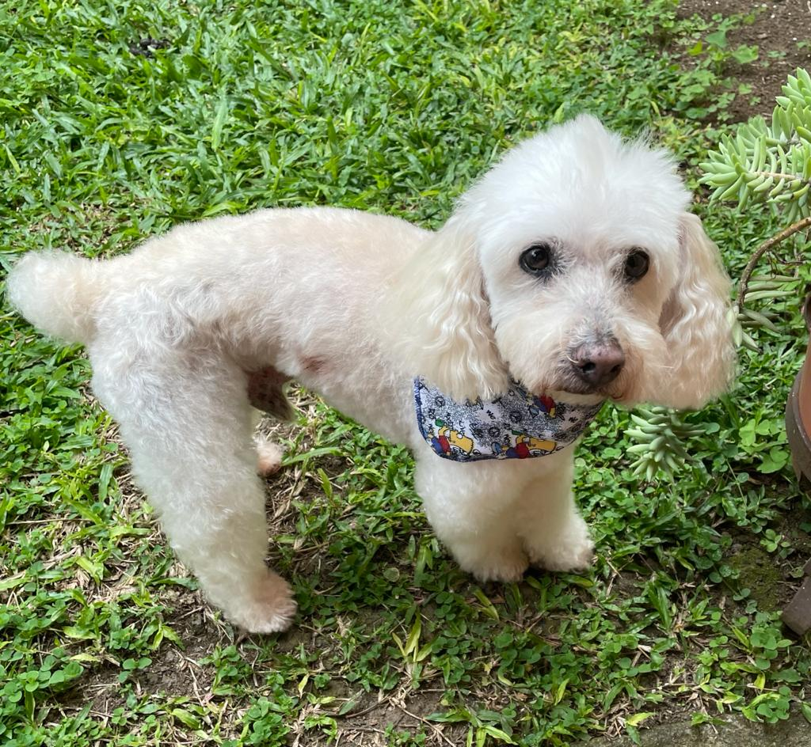

Yokito
El perrito de toda mi vida
 Pet icons created by Freepik - Flaticon
Pet icons created by Freepik - Flaticon
Yoko, mejor conocido como el Rey de la Casa o Yokito, ha sido el perrito de mi familia por mas de 16 años. Siempre se ha caracterizado por ser el centro de la familia y el mas querido de todos.
Razones por las que es el mejor
- Es el mas chineado
- Es el lindo de todos
- Es super amigable con las personas y otros perros
Sus mejores amigos
- Yo, Agus, por supuestos
- Koi, su hermanito recientemente llegado
- Puppy, el perrito de mi tia